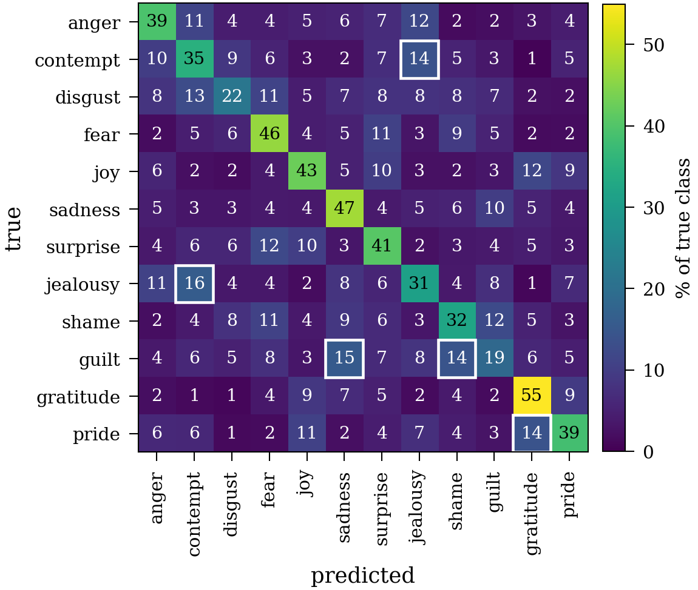
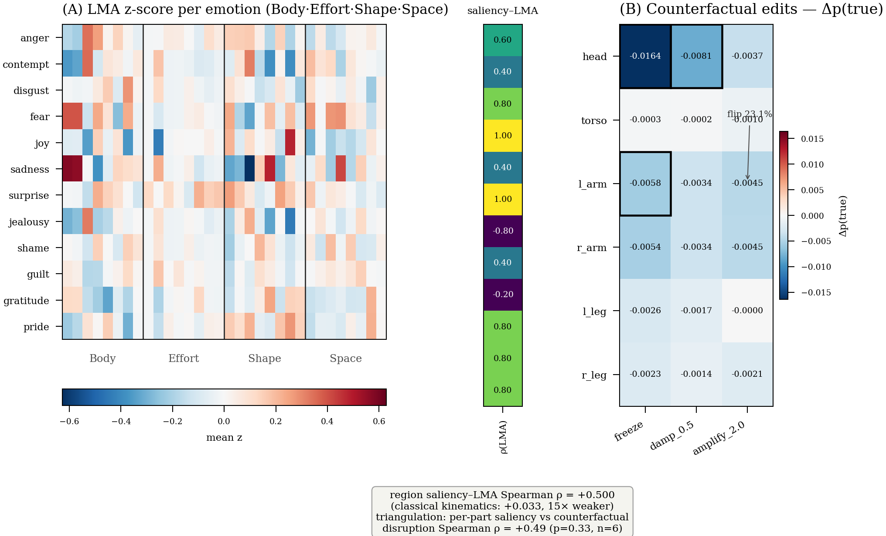

Naoto Nishida and Yoshio Ishiguro The University of Tokyo
MMAC Challenge at ACII 2026 · Oral
Entrants name the emotion in a motion-capture recording of a single performer. The system sees 24 joints on the body plus one point for where the body is in the room: no face, no sound, no scene.
Combining models pays only when they are wrong on different recordings.
Every claim about what the model reads is a test that can come back negative.
Each recording is one performer acting one emotion; every model here reads a fixed 64-frame window of it, about half a second. The recordings come from DIEM-A, the Diverse Intercultural E-Motion Database of Asian Performers.
Two people performing the same emotion differ about as much as one person performing two different emotions.
Jealousy moves like contempt, and shame moves like guilt.
The people in the test recordings never appear in training, so learning how one person moves buys nothing.
We retrained the organisers’ reference model, STGCN++, on this split: 25.73 ± 4.03% Macro-F1, against 8.3% for guessing. A better network on its own gains little here.
Every score here comes from 10-fold leave-performers-out cross-validation over the 74 training performers, reported as the per-fold mean ± SD.
Every upgrade to a single model failed or made the score worse.
All on the same ten-way performer split. The paper lists eight of these; together they are the ceiling on one better network.
Averaging cancels a mistake only when the members do not make it together, so the members were chosen for how differently they fail.
More capacity in one network. Under this split it did not transfer to performers the model had never seen.
Eleven models whose assumptions about motion differ, so the recording that defeats one family is not the one that defeats the next.
This can fail. If the gain came from parameters, the members’ errors would coincide and dropping one would cost nothing. Both are measured later in the talk.
One larger network was the alternative. The capacity went to these four assumptions instead.
Graph, 4 · STGCN++, CTR-GCN, ProtoGCN, Region-Aware ConvTr
Attention, 1 · SkateFormer
Hybrid MLP, 2 · Conv1D+Transformer, Keypoint-Pool-MLP
Frozen external, 4 · MAMP NTU60 and NTU120, MotionBERT-Lite, C3D-marker-stats
The frozen branches disagree with the rest more than any other family, and removing that block costs −2.91 pp.
Seven members trained here plus four frozen branches with a linear head each: 12.98 M trainable parameters.
Add the eleven logit vectors and divide by eleven.
A fitted weight is fitted to the performers in the training folds, which is the thing that does not transfer here.
A softmax first bounds how far one member can disagree with the rest.
The two smaller figures are the same comparison with the members rescaled and then with their magnitudes thrown away, so the gain is not an artifact of one member's logits being larger than another's.
The gain excludes zero in all ten folds, and again when we resample performers.
These scores come from the training performers. The organisers keep the test labels, so our score on the contest test set is still pending.
95% CI on the gain: [9.86, 12.33] pp by fold, [9.14, 12.17] pp by performer. The organisers' published baseline over all 92 performers, 25.21 ± 4.49%, sits within one SD of our rerun; we quote it for reference and measure the gain against the rerun.
Baseline, best single model, seven members, then eleven: 25.7 → 30.1 → 33.9 → 36.8%.
The ensemble beats the best single model by +6.8 pp, more than any change of architecture bought us.
The last step is the four frozen external branches joining the seven members we trained ourselves.
Each bar is the mean over ten leave-performers-out folds, each dot is one fold, and the pooled out-of-fold score sits beside each bar.
Pairwise error correlations stay between 0.15 and 0.43, and they are lowest for the four frozen external members.
Removing any one member costs −0.84 to −0.09 pp. Removing all four frozen external members at once costs −2.91 pp.
Correlations run over per-sample error indicators on 7,992 out-of-fold clips. The removal costs are pooled out-of-fold Macro-F1 against a base of 36.94%.
Jealousy reads as contempt and guilt as sadness, and top confidence sits near 62%.
The country difference is not a cultural finding.
Japanese and Taiwanese performers score 35.3 and 38.9%. The two groups also differ in when they were recorded and in how each person moves.
Dropping the seven earliest Japanese performers from training moves the score by −0.44 pp.

Row-normalised out-of-fold confusion over the twelve emotions, with the five strongest off-diagonal cells boxed.
The recording-date check gives 36.50 against 36.94% pooled out-of-fold. The same motion also decodes which country a performer is from about 69.8% of the time, which is another reason not to read the country gap as culture.
A saliency map cannot come back wrong. A test can.
The second half asks which parts of the body the model uses, and answers by interfering with the movement instead of drawing a picture of it.
To claim the model uses a part of the body, we mask it, perturb it, or edit how it moves, and watch whether the prediction moves.
All of this runs on the finished models, so nothing is retrained and no accuracy is lost.
Each check runs on one strong member of the submitted ensemble; the two that carry the most weight are re-run on all eleven.
Masking the parts it ranks high costs more accuracy than masking the parts it ranks low, and the ranking barely moves under noise.
| Check | Metric | Value | Consistency |
|---|---|---|---|
| Part-masking | AUC gap, important order minus reverse | +0.124 ± 0.031 | positive in all 10 folds |
| Stability | Spearman ρ under noise at σ = 0.02 | +0.983 ± 0.039 | the top part never flips |
Without these two, the alignment on the next slide would be a picture agreeing with itself.
Masking works over 6 body parts here and the next slide's alignment over 4 regions, two groupings for two checks. At the finer 25-joint resolution the gap grows to +0.199. Both values are 10-fold means.
Laban Movement Analysis is a movement analyst's vocabulary for how a body moves. People wrote its rules; nothing learned them from our recordings.
One strong member. The 12 emotions are not 12 independent observations, so the 95% CI [+0.150, +0.733] is an emotion-block bootstrap and the null permutes regions within an emotion, p < 0.001. Positive for 10 of the 12 emotions (sign test p = 0.039, median ρ = +0.70).

These edits corroborate the finding. They are not causal proof, and the main evidence is still the +0.500 against +0.033 alignment.
Inside the half-second the model reads, every frame counts about the same, and across the body the head and neck dominate. Order still matters: reverse the clip and every model that reads it in order loses 3 to 5 points.
The window is 64 frames, about half a second at 120 fps. Across frames the important-versus-reverse gap is about +0.002, against +0.124 ± 0.031 across body parts, and frame saliency entropy is 98.7% of its maximum per clip, 99.5% as a class mean. The null is about locating a frame, not about time.
Scores vary about fourfold across performers, and the spread splits in two.
Some performers are hard for every member.
Averaging members whose errors are orthogonal cancels it. The explanations describe the same disagreement.
Where we are honest
Recordings paired with written explanations are not released while consent and licensing are under review.
Thank you. I am happy to take questions.
Naoto Nishida and Yoshio Ishiguro, The University of Tokyo